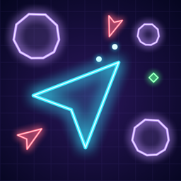

Astro Horda
Sobreviva à horda. Evolua a nave.
iPhone · Beta no TestFlightO jogo
Astro Horda é um jogo de nave no estilo "survivors", com visual de monitor vetorial neon. Você só pilota com um dedo, e as armas atiram sozinhas. Ondas cada vez maiores de asteroides e naves inimigas chegam de todos os lados. A cada nível, escolha uma melhoria entre três. Aguente seis minutos e enfrente a Matriarca, a nave-mãe da horda.
Destaques
- 16 melhorias comuns, raras e lendárias: mísseis teleguiados, satélites, arco voltaico, pulso nova, fragmentação, Fúria Estelar…
- Inimigos variados: asteroides que se partem, caças velozes, sentinelas que atiram e brutos blindados.
- Partidas rápidas de 5 a 7 minutos, com um chefe final.
- Controle de um dedo só, que nunca cobre a nave.
- Visual neon, trilha synthwave e vibração a cada explosão.
- Sem anúncios, sem contas e sem coleta de dados.
Suporte
Dúvidas ou sugestões: rinaldosjr@gmail.com · Política de Privacidade
The game
Astro Horda is a "survivors"-style space shooter with the look of a neon vector monitor. You only steer with one finger, and your weapons fire on their own. Ever bigger waves of asteroids and enemy ships come from every side. Pick one of three upgrades at each level. Last six minutes and face the Matriarch, the mothership of the horde.
Highlights
- 16 upgrades across common, rare and legendary tiers: homing missiles, satellites, arc lightning, nova pulse, shrapnel, Star Fury…
- Varied enemies: splitting asteroids, fast darts, shooting sentinels and armored brutes.
- Quick runs of 5 to 7 minutes, with a final boss.
- One-finger controls that never cover the ship.
- Neon visuals, a synthwave soundtrack and haptics on every explosion.
- No ads, no accounts and no data collection.
Support
Questions or ideas: rinaldosjr@gmail.com · Privacy Policy